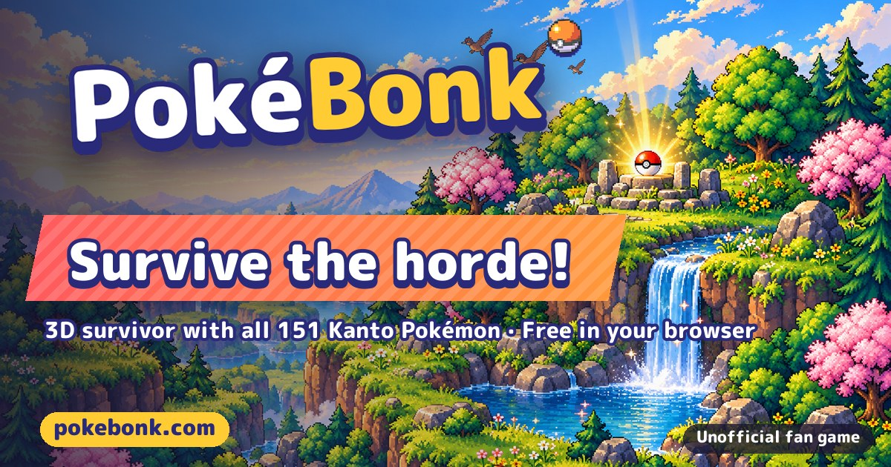
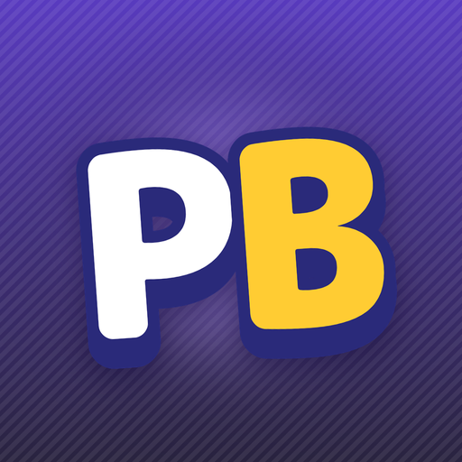

포켓본크 하는 법, 브라우저 무료 포켓몬 서바이버 팬게임 조작법·모드·난이도 정리
설치 없이 브라우저에서 바로 돌리는 포켓몬 서바이버 팬게임 '포켓본크(PokéBonk)'를 접속 전에 알아둘 만큼만 정리해 봤어요. 직접 플레이한 후기가 아니라 게임 안내 문구와 패치노트, 고지 페이지를 기준으로 쓴 소개 글이고, 기준은 2026-10-20 · v0.7.7이랍니다.
포켓본크가 뭔가요, 설치 없이 무료로 되나요?
포켓본크는 설치 없이 브라우저에서 무료로 즐기는 3D 포켓몬 서바이버 팬게임이에요.
소개 문구에 따르면 야생 포켓몬 무리 속에서 살아남고 진화시키며 리그를 넓혀 가는 구조인데요, 관동지방 포켓몬 151마리가 나온다고 해요. 공식 포켓몬 게임이 아니라 팬이 만든 비공식 프로젝트라는 점을 먼저 기억해 두세요.

카드에는 관동 포켓몬 151마리, 브라우저 무료, 비공식 팬 게임이라는 문구가 영어로 적혀 있어요.
이미지: PokéBonk 공식 소개 카드(pokebonk.com, 영문판) — 비공식 팬 게임 소개 이미지
| 항목 | 내용 |
|---|---|
| 장르 | 서바이버 · 로그라이트 · 액션 |
| 플랫폼·가격 | 웹 브라우저(WebGL), 무료 |
| 언어 | 한국어 포함 9개 언어 |
| 계정 | 트레이너 이름 + 비밀번호 |
포켓본크 시작하는 법, 지금은 어떤 상태인가요?
접속한 뒤 게스트나 계정으로 들어가서 파트너를 고르고 지역과 난이도를 정하면 시작이에요.
파트너 선택 화면에는 도감번호 1·4·7번 후보가 나오는데, 번호로 보면 관동 스타팅 3종에 해당해요. 고른 포켓몬은 리그의 첫 멤버가 되고, 나머지 둘은 도전을 완료하고 나중에 판에서 잡으면 합류한다고 해요.
공개된 지 얼마 안 된 게임으로 보여요. 패치노트는 10월 17일 0.5.0부터 10월 20일 0.7.7까지 나흘 사이 22개 버전이 올라왔거든요.
포켓본크 조작법, PC·모바일·패드는 어떻게 다른가요?
PC는 WASD 이동과 마우스 카메라가 기본이고, 모바일은 가로 모드 터치, 게임패드는 판과 모든 메뉴를 지원해요.
| 동작 | PC 기본 키 |
|---|---|
| 이동 · 카메라 | WASD · 마우스 |
| 점프 · 활공 | Space (날 수 있는 포켓몬은 누르고 있으면 활공) |
| 슬라이딩 | Shift (슬라이딩 중 무적) |
| 얼티밋 | R |
| 상호작용 · 포획 | E |
| 목표 고정 · 조준 | 우클릭 · Q |
| 일시정지 · 큰 지도 | Esc 또는 P · M |
| 레벨업 새로고침 · 건너뛰기 · 추방 | F · X · Z |
일시정지 화면의 조작 안내가 키의 기준이 돼요.
레벨업 카드창의 세 키는 10월 19일 0.7.6에서 바뀐 값이에요. 직전 0.7.4에서는 R·S·B였는데 뒤로 걷다가 레벨업을 건너뛰는 사고가 있어서 옮겼다고 패치노트에 적혀 있답니다. 키는 설정의 키 메뉴에서 전부 다시 지정할 수 있고, 일시정지 키도 0.7.7부터 바꿀 수 있어요.
모바일은 왼쪽 조이스틱으로 이동하고 손가락을 끌어 카메라를 돌리며, 핀치로 확대·축소해요. 오른쪽 버튼에 점프·슬라이딩·얼티밋·상호작용이 모여 있어요. 게임패드는 방향 패드·스틱으로 메뉴를 옮기고 A가 선택, B가 뒤로, LB/RB가 탭 전환이랍니다.
포켓본크 한 판은 어떻게 흘러가고, 첫 판은 뭘 하면 되나요?
클래식 모드의 한 판은 지역마다 구역 3개를 수호자를 쓰러뜨리고 포털을 열며 넘어가고, 그 뒤에 최종 전투가 이어져요.
무리를 처치하면 경험치가 쌓이고, 레벨업 때마다 새 공격·공격 강화·비타민 카드 중에서 고르는 흐름인데요. 새로고침·건너뛰기·추방은 판당 횟수가 정해져 있고 연구소 강화로 늘릴 수 있어요. 레벨이 차면 진화하고, 갈래 진화는 직접 골라요. 얼티밋은 싸우면서 충전되고 발동하는 동안 무적이에요.
카드창에 새로고침·건너뛰기·추방 키 표기가 보이는 화면이에요.
첫 판 순서 5줄, 안내 문구를 추려 보면 이래요.
- 파트너부터 고르는 걸 추천드려요. 고른 포켓몬이 리그의 첫 멤버가 돼요.
- 수호자까지 레벨업을 이어 가요. 카드를 고르며 구역 끝 수호자를 쓰러뜨리면 포털이 열려요.
- 알파를 약하게 만든 뒤 가까이 가서 E로 몬스터볼을 던져요. 알파·전설·이로치는 쓰러뜨려도 잡을 때까지 기다리고, 빠져나가면 다시 약하게 만들면 돼요.
- 판이 끝나면 연구소에서 별의모래를 쓰시는 게 좋아요. 영구 강화가 열려요.
- 설정에서 기기에 맞게 품질을 낮춰 두시길 권해요.
잡을 때 볼 종류도 알아 두면 좋아요. 약해진 알파에 프렌드볼을 쓰면 그 판 동안 곁에서 같이 싸우는 지원 알파가 되지만 리그에는 합류하지 않는다고 해요. 리그에 넣고 싶다면 도전을 완료한 뒤 일반 모습으로 잡아야 한답니다.
포켓본크 모드와 난이도, 성장 구조는 어떻게 되어 있나요?
모드는 클래식·무한(서바이벌)·타임어택 세 가지이고, 난이도는 노말·어려움·악몽 3단계로 게임에 표기돼 있어요.
- 클래식은 최종 전투까지 가는 모드예요.
- 무한 모드는 열린 맵에서 끝없는 무리를 버티는 모드이고, 난이도와 승리가 없는 대신 5분마다 보스가 나와요.
- 타임어택은 지역과 난이도별로 가장 빠른 승리를 겨뤄요.
어려움은 포켓몬이 더 많고 빠르며 보스 경고가 줄고, 악몽은 쓰러지면 터지는 정예와 더 큰 무리가 나온다고 안내돼 있어요. 난이도가 오를수록 별의모래 보상 배율도 커지고, 다음 난이도는 그 지역의 전 단계에서 한 판 이겨야 열려요.
성장의 중심은 연구소예요. 별의모래는 판 종료·보스·이로치·업적·의뢰로 모이고, 연구소에서 피해·HP·속도 같은 영구 강화와 4번째 기술 슬롯, 새 도구 해금에 써요. 판 안의 돈은 따로 포켓달러예요. 이정표에서 고르는 계약은 저주를 대가로 지금 바로 힘을 얻는 방식이며, 저주 하나당 난이도가 5% 오른다고 해요.
난이도 선택과 연구소가 별의모래로 이어지는 화면이에요.
포켓본크 클랜과 순위, 시즌은 어떻게 돌아가나요?
순위표는 처치·타임어택·서바이벌 세 종류이고, 시즌이 끝나면 상위권에게 배지·프레임·별의모래가, 1위에게는 칭호가 나가는 시즌제예요.
포켓몬별 순위와 클랜 순위도 따로 있어요. 게스트로 하면 순위표에 오르지 않거든요. 클랜은 이름 3~24자에 약칭 2~4자이고, 창설·확장에 별의모래가 들어가요.
순위표에서 탭별 순위를 볼 수 있어요.
패치노트에는 부정행위 계정을 정지하고 기록을 삭제했다는 공지가 여러 버전에 걸쳐 올라왔고, 0.7.5에는 전체 랭킹 1위 계정도 포함됐다고 적혀 있어요. 순위표는 시즌 일정과 함께 바뀔 수 있답니다.
포켓본크 팬메이드·비공식 고지와 개인정보, 안전하게 즐기려면 뭘 알아야 하나요?
포켓본크는 팬이 만든 비공식 무료·비영리 프로젝트이고, 포켓몬 권리자와는 관계가 없다고 공식 고지 페이지에 적혀 있어요. 아래 불릿은 모두 그 고지 기준입니다.

이미지: PokéBonk 공식 아이콘(pokebonk.com) — 비공식 팬 게임 소개 이미지
- 무료·비영리라서 광고·구매·구독·후원이 없어요.
- 닌텐도·주식회사 포켓몬·크리처스·게임프리크와 제휴·후원·승인 관계가 없고, 포켓몬 관련 이름·캐릭터·기술·이미지·소리는 각 권리자의 상표·저작물(© 1995-2026)이에요.
- 포켓몬 스프라이트는 PMD SpriteCollab(CC BY-NC 4.0), 포켓몬 데이터는 PokeAPI를 쓴다고 밝혔어요.
- 권리자가 요청하면 72시간 안에 해당 콘텐츠나 프로젝트를 내려요.
- Megabonk는 영감일 뿐 관련이 없어요.
이 글은 게임 안내 문구와 고지 내용을 옮긴 소개 글이에요. 포켓몬·기술 이름은 게임에 표기된 이름이라 공식 표기와 다를 수 있답니다.
계정은 트레이너 이름과 비밀번호만 쓰고 이메일을 받지 않아서, 비밀번호를 잊으면 복구할 수 없어요. 트레이너 이름은 순위표와 프로필 카드에 공개되니 실명은 피하시고, 만 14세 미만은 보호자 동의가 필요합니다. 저사양이라면 설정에서 그래픽 품질 낮음과 배터리 절약을 써 보세요.
자주 묻는 질문
Q. 포켓본크 무료인가요? 설치해야 하나요?
무료이고 설치 없이 웹에서만 플레이해요. 브라우저에서 WebGL과 자바스크립트가 돌아야 해요. 하드웨어 가속이 꺼져 있으면 fps가 매우 낮다는 경고가 뜨고, 브라우저 시스템 설정에서 켜라고 안내해요.
Q. 모바일이나 게임패드로도 되나요?
터치 조작과 게임패드 지원 문구가 모두 있고, 모바일은 가로 모드로 해야 해요. 다만 iOS 같은 기기별 공식 지원 범위는 표기를 찾지 못했어요.
Q. 공식 포켓몬 게임인가요? 저작권은 괜찮나요?
공식 게임이 아니라 팬이 만든 비공식 게임이에요. 저작권이 괜찮은지는 이 글이 판단할 수 없고, 위 고지 내용만 전달할 수 있어요.
Q. 가입해야 하나요?
가입 없이 게스트로 바로 플레이하는 방식이 있고, 진행은 그 기기에 저장돼요. 게임 안에는 초대 코드가 필요한 모드도 남아 있어서 서버 설정에 따라 달라질 수 있어요.
Q. 한국어로 되나요? 업데이트가 잦나요?
10월 17일 0.5.7부터 중국어 번체·러시아어와 함께 한국어가 들어왔어요. 업데이트가 잦아서 키와 밸런스가 바뀔 수 있어요.
조작 키 표와 첫 판 순서만 챙겨서 가볍게 시작해 보시길 추천드려요.
참고한 곳
· 포켓본크 공식 사이트(한국어)
· 포켓본크 법적 고지·개인정보 페이지
· 패치노트: pokebonk.com 접속 후 모바일에서 버전을 누르면 새 소식을 다시 볼 수 있어요.
기준 시점 2026-10-20 · v0.7.7 · 업데이트가 잦아서 키나 시즌 내용이 바뀔 수 있어요.